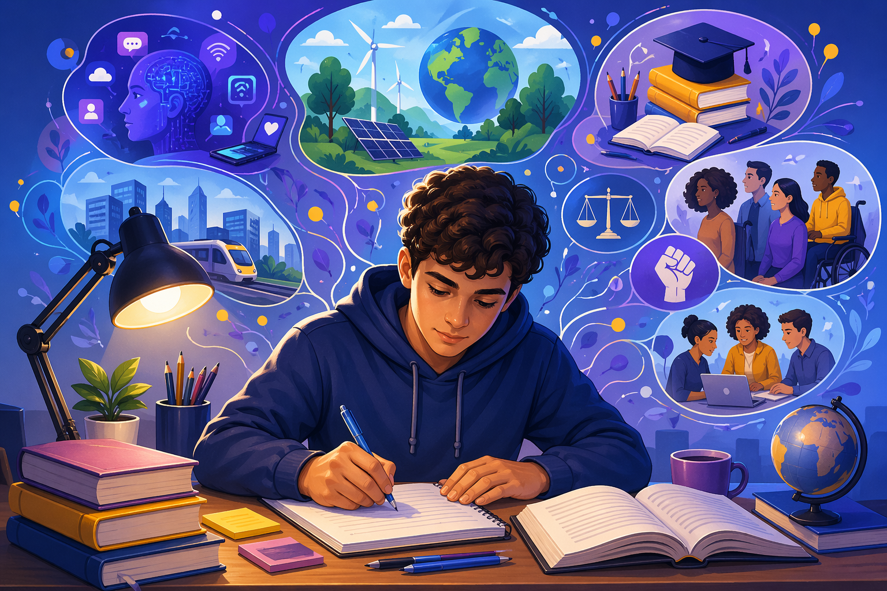

13 possíveis temas de redação para o ENEM 2026: análises, repertórios e teses
Estudar temas de redação é uma maneira de compreender problemas brasileiros e aprender a construir posicionamentos sobre eles. O resultado desse estudo aparece quando o candidato consegue delimitar uma questão, explicar suas causas, relacionar conhecimentos e propor uma intervenção coerente.
Este guia reúne 13 propostas de treino para a redação do ENEM 2026. Cada tema apresenta uma análise do problema, caminhos argumentativos, repertórios explicados, uma tese possível e sugestões de intervenção. Entre eles está a discussão sobre os desafios para a preservação da memória histórica em meio à cultura digital no Brasil.
Atenção: esta seleção não constitui previsão do tema oficial nem estabelece uma ordem de probabilidade. Os assuntos foram reunidos por sua relevância social e pelas possibilidades de aprendizagem que oferecem.

Como estudar um tema de redação com profundidade?
A Cartilha do Participante do Inep orienta a produção de um texto dissertativo-argumentativo no qual o candidato defenda um ponto de vista, organize argumentos e apresente uma proposta de intervenção social. Por isso, conhecer o assunto é apenas o início: é necessário transformar informações em uma explicação consistente do problema.
Há uma diferença entre assunto e recorte temático. “Tecnologia” é um assunto amplo. “Desafios para a preservação da memória histórica em meio à cultura digital no Brasil” delimita um problema, um contexto e uma realidade nacional. Uma redação que discuta apenas vantagens e desvantagens da internet pode deixar de desenvolver o núcleo dessa proposta.
- Identifique o objeto: o que precisa ser discutido ou preservado?
- Delimite o problema: qual dificuldade impede a garantia de um direito ou a transformação de uma realidade?
- Investigue mecanismos: como determinada causa produz ou mantém o problema?
- Selecione evidências: que obra, conceito, experiência histórica ou documento ajuda a explicar essa relação?
- Planeje a intervenção: quem pode agir sobre a causa analisada e por quais meios?
Ao estudar os temas seguintes, observe principalmente as relações entre causa, funcionamento e consequência. Essa organização ajuda a superar afirmações vagas, como “falta conscientização” ou “o governo precisa agir”, sem explicação do que ocorre na realidade.
1. Os desafios éticos do uso da inteligência artificial na sociedade brasileira
A discussão sobre inteligência artificial ultrapassa a eficiência das ferramentas. Quando sistemas automatizados participam da seleção de candidatos a empregos, da circulação de informações ou da produção de materiais escolares, torna-se necessário perguntar quem define seus critérios, quais dados são utilizados e como decisões equivocadas podem ser contestadas.
Um caminho argumentativo é analisar a reprodução de desigualdades: bases de dados que carregam distorções sociais podem contribuir para resultados discriminatórios. Outro é discutir a delegação de responsabilidades, situação em que pessoas e instituições atribuem autoridade à resposta de um sistema sem verificar sua adequação. O problema envolve tanto os usos individuais quanto as escolhas das organizações que oferecem ou adotam essas tecnologias.
Repertórios e possibilidades de uso
- Frankenstein, de Mary Shelley: permite discutir a responsabilidade de quem desenvolve uma criação por seus efeitos. A aproximação deve se concentrar na responsabilidade ética, sem equiparar literalmente a IA à criatura do romance.
- Pedagogia da autonomia, de Paulo Freire: a valorização da curiosidade crítica pode fundamentar a defesa de práticas escolares nas quais o estudante examine respostas automatizadas e construa sua própria compreensão.
Tese possível: a adoção socialmente responsável da inteligência artificial no Brasil depende do enfrentamento da opacidade de seus usos e da formação de cidadãos capazes de avaliar criticamente seus resultados.
Intervenção possível: redes de ensino, com apoio de universidades, podem oferecer formação docente e atividades de análise de respostas geradas por IA, comparando fontes, identificando erros e discutindo vieses. Instituições que utilizam sistemas automatizados também podem estabelecer revisão humana e canais de contestação para decisões que afetem pessoas.
Cuidado com o recorte: evite reduzir o tema à substituição de empregos ou afirmar que toda produção de IA é falsa. Explique qual uso apresenta o risco analisado e quem pode responder por ele.
2. Os desafios para dar visibilidade a grupos socialmente marginalizados
A invisibilidade social não significa necessariamente ausência de imagens ou notícias sobre um grupo. Uma população pode aparecer frequentemente nos meios de comunicação e, ainda assim, ser representada apenas por estereótipos. Nesse caso, há exposição, mas pouco reconhecimento de sua diversidade, de suas demandas e de sua capacidade de participar das decisões coletivas.
O problema pode ser desenvolvido por dois caminhos: a representação limitada, que associa determinados sujeitos apenas à violência ou à carência, e a exclusão dos espaços de decisão, que permite falar sobre essas pessoas sem ouvi-las. Para evitar generalizações, convém escolher exemplos e reconhecer que populações indígenas, pessoas em situação de rua e moradores de periferias enfrentam processos distintos de marginalização.
Repertórios e possibilidades de uso
- Quarto de despejo, de Carolina Maria de Jesus: a escrita de uma mulher negra e moradora de favela evidencia a importância de sujeitos historicamente marginalizados produzirem suas próprias narrativas.
- A hora da estrela, de Clarice Lispector: a trajetória de Macabéa permite refletir sobre indiferença social e dificuldades de reconhecimento de uma mulher pobre e migrante.
Tese possível: a invisibilidade de grupos marginalizados persiste quando sua representação se restringe a estereótipos e quando suas experiências não participam da formulação de políticas públicas.
Intervenção possível: órgãos públicos locais podem realizar consultas comunitárias acessíveis antes de planejar serviços, divulgando como as demandas recebidas serão consideradas. Meios de comunicação e projetos escolares podem ampliar a participação de integrantes desses grupos como autores e fontes de informação.
Cuidado com o recorte: não apresente as pessoas marginalizadas apenas como receptoras de ajuda. Reconheça sua atuação política, cultural e econômica.
3. Os impactos das mudanças climáticas na ampliação das desigualdades sociais
As consequências de eventos climáticos extremos dependem também das condições em que as pessoas vivem. Moradias em áreas sujeitas a alagamentos, infraestrutura precária, ausência de arborização e dificuldades de acesso a serviços podem ampliar a exposição a riscos. Além disso, famílias com poucos recursos tendem a enfrentar mais obstáculos para se deslocar, recuperar bens e reorganizar sua vida após um desastre.
A argumentação pode distinguir exposição, vulnerabilidade e capacidade de recuperação. Essa distinção mostra por que um mesmo evento não produz efeitos iguais. Também permite discutir como decisões sobre habitação, drenagem, transporte e ocupação do território participam da distribuição social dos danos.
Repertórios e possibilidades de uso
- Vidas secas, de Graciliano Ramos: a relação entre seca, deslocamento e exploração permite analisar como condições ambientais se articulam à vulnerabilidade social. O romance não deve ser apresentado como prova científica das mudanças climáticas atuais.
- Justiça climática: o conceito ajuda a discutir a distribuição desigual dos impactos e a necessidade de considerar as populações mais expostas nas decisões de prevenção e adaptação.
Tese possível: os impactos das mudanças climáticas aprofundam desigualdades no Brasil porque se somam à precariedade habitacional e à distribuição desigual de infraestrutura de prevenção e proteção.
Intervenção possível: prefeituras, em articulação com a Defesa Civil e órgãos de habitação, podem atualizar mapas de risco, realizar obras de drenagem e organizar planos de evacuação com participação comunitária. Nas áreas em que a permanência seja insegura, as medidas devem incluir alternativas habitacionais adequadas.
Cuidado com o recorte: evite atribuir aos moradores a responsabilidade exclusiva pela ocupação de áreas de risco ou explicar todo desastre apenas pela intensidade da chuva.
4. Os desafios para ampliar o cuidado com a saúde mental no Brasil
O debate sobre saúde mental envolve condições de vida, relações sociais e acesso a serviços de cuidado. Estudantes e trabalhadores podem enfrentar sofrimento associado a cobranças de desempenho, insegurança econômica, violência e isolamento. Entretanto, a existência dessas pressões não autoriza diagnosticar transtornos nem atribuí-los a uma causa única.
Uma análise consistente pode abordar o estigma, que dificulta a busca por ajuda, e as barreiras de acesso ao cuidado, como distância dos serviços, descontinuidade do acompanhamento e falta de informação sobre onde procurar atendimento. Campanhas educativas podem contribuir, mas precisam estar relacionadas a possibilidades concretas de acolhimento.
Repertórios e possibilidades de uso
- Sociedade do cansaço, de Byung-Chul Han: sua reflexão sobre desempenho e autoexigência pode ajudar a examinar pressões sociais, sem substituir explicações clínicas.
- Nise da Silveira: sua atuação pode fundamentar uma discussão sobre cuidado humanizado e reconhecimento da pessoa para além do diagnóstico.
Tese possível: a ampliação do cuidado em saúde mental exige enfrentar a estigmatização do sofrimento e reduzir as barreiras que dificultam o acesso contínuo ao atendimento.
Intervenção possível: secretarias de Saúde podem fortalecer a articulação entre atenção básica e serviços especializados, com divulgação dos caminhos de acesso e acompanhamento dos encaminhamentos. Escolas podem organizar ações de acolhimento e orientação em parceria com profissionais da saúde.
Cuidado com o recorte: não trate transtornos como falta de força de vontade nem apresente educação emocional como substituta do atendimento profissional.
5. Os desafios para garantir a permanência dos estudantes na educação básica
Garantir matrícula não assegura, por si só, a permanência e a aprendizagem. Estudantes podem enfrentar jornadas de trabalho, responsabilidades domésticas, dificuldades de transporte, discriminação ou lacunas de aprendizagem acumuladas. Esses obstáculos podem se combinar e transformar faltas recorrentes em afastamento prolongado da escola.
É produtivo analisar tanto as condições materiais de frequência quanto o vínculo pedagógico. Um estudante com dificuldades de leitura, por exemplo, pode deixar de participar das atividades e perder o sentimento de pertencimento. A resposta precisa considerar seu contexto e oferecer apoio, sem responsabilizá-lo isoladamente pelo afastamento.
Repertórios e possibilidades de uso
- Pedagogia do oprimido, de Paulo Freire: permite discutir uma educação que reconheça a experiência dos estudantes e favoreça sua participação na construção do conhecimento.
- O conto “A escola”, de Machado de Assis: pode apoiar reflexões sobre relações de autoridade e experiências escolares, desde que a análise explicite sua conexão com o argumento escolhido.
Tese possível: a permanência na educação básica é comprometida pela combinação de vulnerabilidades socioeconômicas e insuficiência de acompanhamento pedagógico das trajetórias escolares.
Intervenção possível: redes de ensino podem organizar acompanhamento de frequência e aprendizagem, com equipes escolares que dialoguem com estudantes e famílias, identifiquem obstáculos e articulem reforço pedagógico, transporte e atendimento socioassistencial conforme a necessidade.
Cuidado com o recorte: expressões como “desinteresse dos jovens” precisam ser investigadas. Elas não explicam, sozinhas, por que determinados estudantes se afastam da escola.
6. Os desafios do combate à desinformação na era digital
A desinformação envolve a produção e a circulação de conteúdos enganosos, que podem incluir documentos adulterados, imagens retiradas de contexto e afirmações sem sustentação. Uma informação pode parecer convincente por confirmar expectativas do público, provocar medo ou ser compartilhada por alguém de confiança.
Dois mecanismos merecem atenção: a exploração das emoções, que pode estimular o compartilhamento antes da verificação, e a perda de contexto, que altera o sentido de imagens, falas e dados. A análise também pode discutir modelos de circulação que premiam o engajamento, sem supor que todo conteúdo popular seja falso.
Repertórios e possibilidades de uso
- “Verdade e política”, de Hannah Arendt: oferece um caminho para refletir sobre a importância dos fatos para o debate público e os riscos da manipulação deliberada da realidade.
- 1984, de George Orwell: a manipulação de registros pelo poder permite discutir controle da informação. A comparação exige cuidado, pois uma obra de ficção não comprova que toda situação contemporânea reproduza o regime do romance.
Tese possível: o enfrentamento da desinformação depende da formação para a verificação de fontes e da redução dos incentivos à circulação de conteúdos enganosos.
Intervenção possível: escolas e bibliotecas podem desenvolver oficinas de leitura de notícias, pesquisa de autoria e conferência de imagens. Plataformas digitais podem aprimorar mecanismos de denúncia e contextualização, com critérios transparentes e possibilidade de revisão.
Cuidado com o recorte: diferencie informação falsa, opinião e divergência de interpretação. Combater desinformação exige critérios de verificação.
7. Os desafios para valorizar a diversidade cultural no Brasil
A diversidade cultural brasileira envolve línguas, práticas religiosas, modos de vida, manifestações artísticas e formas de transmissão de conhecimentos. Sua valorização depende de condições para que os próprios grupos mantenham, transformem e transmitam suas práticas, sem que sejam reconhecidos apenas em datas comemorativas.
Um argumento possível é discutir a hierarquização cultural, que trata determinadas produções como superiores e reduz outras a curiosidades. Outro é examinar a desigualdade de acesso a recursos e espaços de circulação, que dificulta a continuidade de atividades culturais em comunidades e territórios com menor infraestrutura.
Repertórios e possibilidades de uso
- O povo brasileiro, de Darcy Ribeiro: permite refletir sobre a formação histórica da sociedade brasileira, reconhecendo também conflitos e relações de poder envolvidos nesse processo.
- Meu livro de cordel, de Cora Coralina: pode contribuir para discutir o valor literário de experiências cotidianas, memórias e vozes frequentemente afastadas dos espaços de prestígio.
Tese possível: a valorização da diversidade cultural no Brasil é limitada por hierarquias que deslegitimam saberes populares e por desigualdades no acesso às condições de produção e transmissão cultural.
Intervenção possível: secretarias de Cultura podem oferecer apoio técnico e financeiro a projetos comunitários, com critérios acessíveis e participação de representantes locais. Escolas podem desenvolver atividades continuadas com artistas, mestres e pesquisadores das próprias comunidades.
Cuidado com o recorte: evite apresentar culturas indígenas e afro-brasileiras como realidades homogêneas ou restritas ao passado.
8. Os desafios da inclusão social de pessoas com deficiência
A participação social de pessoas com deficiência pode ser limitada por barreiras arquitetônicas, comunicacionais, digitais e atitudinais. Um serviço disponível na internet, por exemplo, continua inacessível quando seu formulário não funciona com tecnologias assistivas ou quando informações essenciais aparecem apenas em imagens sem descrição.
A argumentação ganha precisão quando desloca o foco da suposta incapacidade individual para a organização dos ambientes e serviços. Também é necessário discutir o capacitismo, que pode aparecer na presunção de incompetência, na infantilização e na exclusão de decisões sobre a própria vida.
Repertórios e possibilidades de uso
- Modelo social da deficiência: ajuda a compreender como barreiras sociais restringem a participação, em vez de explicar a exclusão somente pelas características do indivíduo.
- Desenho universal: permite defender o planejamento de ambientes, produtos e serviços que possam ser utilizados pelo maior número possível de pessoas.
Tese possível: a inclusão social de pessoas com deficiência depende da remoção de barreiras nos serviços e do enfrentamento de atitudes que desconsideram sua autonomia.
Intervenção possível: gestores de serviços públicos podem realizar avaliações de acessibilidade com participação de pessoas com deficiência, estabelecer prioridades de adaptação e publicar prazos de execução. As equipes responsáveis pelo atendimento devem receber formação vinculada às dificuldades identificadas.
Cuidado com o recorte: evite narrativas que transformem direitos em favores ou apresentem a pessoa com deficiência como exemplo obrigatório de superação.
9. Os desafios para conciliar responsabilização e respeito à dignidade nas redes sociais
Debates sobre a chamada cultura do cancelamento exigem distinguir crítica pública, denúncia de violência, responsabilização e perseguição. A contestação de uma fala discriminatória não equivale automaticamente a um linchamento virtual. Por outro lado, ameaças, divulgação de dados pessoais e ataques coordenados podem ampliar danos e atingir pessoas sem relação com o fato discutido.
O tema permite examinar a velocidade do julgamento, que pode antecipar conclusões antes da apuração, e a desproporção das reações, quando a circulação de ataques ultrapassa a crítica à conduta. A busca de visibilidade também pode estimular respostas cada vez mais agressivas.
Repertórios e possibilidades de uso
- A sociedade do espetáculo, de Guy Debord: pode ajudar a discutir a transformação de conflitos em eventos de exposição e consumo, desde que o conceito seja explicado.
- “O espelho”, de Machado de Assis: a relação entre identidade e olhar social permite refletir sobre a importância do reconhecimento externo, sem atribuir ao conto uma discussão direta sobre redes digitais.
Tese possível: a responsabilização no ambiente digital é prejudicada quando julgamentos acelerados e ataques desproporcionais substituem a apuração e o debate sobre as condutas.
Intervenção possível: plataformas podem facilitar denúncias de ameaças e exposição de dados, oferecendo acompanhamento e revisão das medidas adotadas. Instituições educacionais podem trabalhar estudos de caso que diferenciem crítica, denúncia, reparação e violência.
Cuidado com o recorte: não utilize a defesa do diálogo para minimizar discriminações nem trate toda reação pública como perseguição.
10. Os desafios para ampliar a participação social da juventude brasileira
A participação juvenil pode ocorrer em grêmios, coletivos culturais, conselhos, associações comunitárias e iniciativas digitais. Entretanto, a possibilidade de se envolver nessas atividades depende de tempo, acesso à informação, condições de deslocamento e abertura das instituições à escuta dos jovens.
Um caminho é analisar a desigualdade nas condições de participação: quem concilia estudo, trabalho e cuidado familiar pode ter menos oportunidades de atuação. Outro é discutir a participação apenas simbólica, em que os jovens são convidados a falar, mas não encontram mecanismos para acompanhar a incorporação de suas propostas.
Repertórios e possibilidades de uso
- Educação como prática da liberdade, de Paulo Freire: pode fundamentar a relação entre formação crítica e participação na vida coletiva.
- Experiência dos movimentos estudantis: oferece exemplos históricos de organização juvenil. O candidato deve escolher um episódio que conheça e explicar sua relação com a tese.
Tese possível: a ampliação da participação social da juventude exige reduzir obstáculos materiais e criar espaços em que a escuta produza efeitos nas decisões.
Intervenção possível: escolas podem fortalecer grêmios com reuniões regulares, apoio à organização e devolutivas sobre propostas apresentadas. Gestores locais podem realizar consultas juvenis em horários acessíveis e divulgar o encaminhamento das demandas.
Cuidado com o recorte: evite definir toda a juventude como desinteressada ou pressupor que participar das redes sociais equivale a ter influência política efetiva.
11. Os desafios para garantir qualidade de vida à população idosa no Brasil
A qualidade de vida na velhice envolve autonomia, vínculos sociais, mobilidade, renda e acesso ao cuidado. As experiências de envelhecimento variam conforme trajetória de trabalho, gênero, raça, território e condições econômicas. Por isso, a população idosa não deve ser tratada como um grupo com necessidades idênticas.
Dois obstáculos permitem desenvolver o tema: a organização de serviços que desconsideram diferentes necessidades de acesso e o etarismo, que associa idade avançada à incapacidade. A digitalização de atendimentos, por exemplo, pode facilitar tarefas para algumas pessoas e criar barreiras para outras quando elimina alternativas presenciais e apoio adequado.
Repertórios e possibilidades de uso
- A velhice, de Simone de Beauvoir: permite discutir como a sociedade atribui sentidos ao envelhecimento e pode relegar pessoas idosas à marginalização.
- Memórias e narrativas intergeracionais: experiências de história oral podem fundamentar o reconhecimento das pessoas idosas como produtoras de conhecimento e participantes da vida comunitária.
Tese possível: garantir qualidade de vida à população idosa exige serviços que preservem sua autonomia e o enfrentamento de práticas sociais que a afastam da participação coletiva.
Intervenção possível: prefeituras podem articular serviços de saúde, assistência e mobilidade, identificando barreiras nos bairros e oferecendo atividades comunitárias acessíveis. Órgãos de atendimento podem manter orientação presencial e apoio ao uso de serviços digitais.
Cuidado com o recorte: não confunda envelhecimento com dependência inevitável nem apresente a família como única responsável pela proteção social.
12. O uso responsável das tecnologias digitais na formação dos estudantes
Ter acesso a equipamentos não significa saber pesquisar, interpretar informações ou produzir conhecimento. Um estudante pode operar aplicativos com facilidade e ainda apresentar dificuldades para reconhecer autoria, avaliar evidências e construir uma explicação própria a partir das fontes consultadas.
O problema envolve a mediação pedagógica e a desigualdade nas condições de uso. Atividades que solicitam apenas a reprodução de respostas tendem a explorar pouco as possibilidades das ferramentas. Ao mesmo tempo, propostas que dependem de internet e equipamentos fora da escola podem ampliar diferenças entre estudantes.
Repertórios e possibilidades de uso
- Pedagogia da autonomia, de Paulo Freire: ajuda a defender práticas de investigação e construção do conhecimento, em lugar da simples transferência de respostas.
- Cibercultura, de Pierre Lévy: oferece elementos para discutir novas formas de comunicação e circulação de saberes, sem pressupor que a conectividade elimine desigualdades.
Tese possível: o uso formativo das tecnologias digitais depende de condições equitativas de acesso e de práticas pedagógicas que desenvolvam autoria e avaliação crítica das informações.
Intervenção possível: redes de ensino podem associar infraestrutura e suporte técnico à formação continuada de professores. Nas atividades, os estudantes podem comparar fontes, registrar etapas da pesquisa e justificar escolhas, permitindo avaliar o processo de aprendizagem.
Cuidado com o recorte: evite afirmar que equipamentos melhoram ou prejudicam a aprendizagem por si mesmos. Explique como são utilizados e em quais condições.
13. Desafios para a preservação da memória histórica em meio à cultura digital no Brasil
A memória histórica é construída por meio de documentos, testemunhos, imagens, objetos e práticas que permitem conhecer e interpretar experiências do passado. Na cultura digital, parte desses registros é convertida para arquivos eletrônicos, enquanto outra parte já nasce em sites, plataformas, mensagens, fotografias e produções audiovisuais.
Esse contexto amplia possibilidades de acesso e participação. Uma comunidade pode registrar histórias de moradores, compartilhar fotografias e divulgar documentos antes pouco conhecidos. Entretanto, a facilidade de publicar não assegura a permanência dos registros nem a preservação de seu contexto. Arquivos podem desaparecer, formatos podem se tornar incompatíveis e páginas podem deixar de existir.
Primeiro desafio: confundir digitalização com preservação
Digitalizar uma fotografia ou um documento é produzir uma representação digital. Preservá-lo exige também identificar sua origem, registrar informações sobre o conteúdo, armazenar cópias seguras e manter condições de leitura ao longo do tempo. Um conjunto de imagens sem autoria, data ou descrição pode continuar disponível e, mesmo assim, perder parte de seu valor como fonte histórica.
A dependência de uma única plataforma também pode tornar acervos vulneráveis a mudanças no serviço, perda de acesso à conta ou encerramento de atividades. Por isso, a preservação demanda planejamento, manutenção e responsabilidade institucional, além da aquisição de equipamentos.
Segundo desafio: enfrentar apagamentos e desigualdades de representação
Nem todas as comunidades possuem os mesmos recursos para registrar e preservar suas experiências. Acervos familiares, histórias de trabalhadores, memórias de populações rurais e conhecimentos de comunidades tradicionais podem permanecer pouco documentados ou pouco acessíveis.
O ambiente digital pode ampliar essas vozes, mas não elimina automaticamente desigualdades anteriores. É necessário perguntar quem escolhe o que será preservado, quem descreve os registros e quem consegue encontrá-los. Projetos de memória devem envolver as pessoas e comunidades representadas, respeitando suas decisões sobre registro e divulgação.
Terceiro desafio: preservar contexto e confiabilidade
Imagens antigas podem circular com legendas incorretas; depoimentos podem ser recortados; documentos podem ser apresentados sem informações sobre sua origem. Além da perda material, há o risco de enfraquecimento das condições que permitem interpretar e verificar o passado.
Preservar a memória histórica envolve, portanto, manter vínculos entre documento, autoria, contexto e procedência. Isso não significa impedir novas interpretações: significa oferecer fontes identificáveis para que interpretações possam ser debatidas e confrontadas.
Repertórios e possibilidades de uso
- Carta sobre a Preservação do Patrimônio Digital, da UNESCO, de 2003: reconhece a importância dos recursos digitais e o risco de sua perda. Pode fundamentar a ideia de que a permanência de arquivos eletrônicos exige estratégias específicas.
- 1984, de George Orwell: a alteração de registros históricos pelo poder permite discutir como o controle das fontes afeta a compreensão do passado. A analogia deve ser delimitada, sem equiparar toda perda de arquivo a uma manipulação intencional.
- Infância, de Graciliano Ramos: a reconstrução literária de experiências permite refletir sobre memória e perspectiva. A obra pode ajudar a mostrar que recordar envolve seleção e interpretação, sem transformar lembranças individuais em comprovação documental de todos os fatos narrados.
Tese e projeto de argumentação
Tese possível: a preservação da memória histórica na cultura digital brasileira é dificultada pela fragilidade das práticas de conservação dos acervos e pelas desigualdades que limitam o registro e a circulação de experiências sociais diversas.
- Desenvolvimento 1: explicar como a ausência de identificação, cópias de segurança e manutenção pode tornar documentos inacessíveis ou pouco confiáveis.
- Desenvolvimento 2: analisar como a concentração de recursos de preservação restringe a presença de determinadas comunidades nos acervos disponíveis.
- Conclusão: propor ações que combinem conservação técnica e participação comunitária.
Exemplo de desenvolvimento argumentativo
A ampliação do volume de registros digitais não garante sua conservação. Quando fotografias e documentos são publicados sem identificação de autoria, data e procedência, sua circulação pode ocorrer acompanhada da perda de referências necessárias à interpretação histórica. Além disso, a dependência de uma única plataforma torna a continuidade do acesso vulnerável às mudanças desse serviço. Nesse cenário, a preservação demanda organização dos acervos e manutenção dos arquivos, para que a disponibilidade imediata se converta em acesso duradouro.
Intervenção possível
Secretarias de Cultura, em parceria com arquivos públicos, universidades e organizações comunitárias, podem organizar programas locais de preservação digital. As ações podem incluir inventário dos acervos, formação de equipes, descrição dos documentos, armazenamento de cópias em locais distintos e revisão periódica dos formatos utilizados.
Para ampliar a representatividade, esses programas podem apoiar projetos de história oral e organização de acervos comunitários, com participação dos grupos envolvidos e definição das condições de acesso. Escolas podem utilizar os materiais em atividades de pesquisa sobre a história local, relacionando preservação e formação histórica.
Cuidado com o recorte: evite afirmar que a internet necessariamente destrói a memória ou que digitalizar todo documento resolve o problema. O centro da discussão é como garantir conservação, contexto, diversidade e acesso ao longo do tempo.
Como transformar repertório em argumento?
Uma referência fortalece a redação quando ajuda a explicar o problema. Citar um autor sem desenvolver sua contribuição pode interromper o raciocínio. Antes de utilizar uma obra, identifique qual ideia será mobilizada e por que ela é pertinente ao recorte.
Considere o tema da memória histórica:
- Referência pouco desenvolvida: “A UNESCO fala sobre patrimônio digital. Por isso, a memória deve ser preservada.”
- Referência articulada: “Ao reconhecer o risco de desaparecimento do patrimônio digital, a UNESCO permite compreender que o armazenamento eletrônico não assegura permanência. Essa preocupação se relaciona à necessidade de manter cópias, identificar fontes e atualizar formatos dos acervos brasileiros.”
No segundo exemplo, o repertório introduz uma ideia que participa da explicação. O estudante demonstra o que compreendeu e estabelece a relação com o problema brasileiro.
Use aspas apenas quando tiver segurança sobre as palavras exatas da fonte. Caso conheça a ideia, mas não a formulação original, apresente-a por paráfrase, com atribuição de autoria. Evite frases de origem incerta e estatísticas que não consiga contextualizar.
Como construir uma tese específica?
A tese expressa o posicionamento que será sustentado. Uma formulação como “o problema precisa ser resolvido pela sociedade” informa pouco sobre o que será defendido. Para ganhar precisão, a tese deve indicar uma interpretação do problema e orientar os argumentos seguintes.
Compare:
- Formulação genérica: “A tecnologia apresenta desafios que precisam ser enfrentados.”
- Formulação delimitada: “A preservação da memória histórica na cultura digital depende de enfrentar a fragilidade da conservação dos arquivos e a desigualdade de representação nos acervos.”
A segunda formulação permite planejar dois percursos de análise. Isso não obriga o estudante a utilizar sempre duas causas ou a seguir um modelo fixo. A organização deve servir ao raciocínio desenvolvido para cada proposta.
Como aprofundar um parágrafo de desenvolvimento?
Um parágrafo argumentativo precisa avançar além da apresentação de uma causa. Se o estudante afirma que há insuficiência de políticas públicas, deve explicar qual serviço ou ação faz falta, como essa ausência atua e quais efeitos produz.
- Apresente a ideia central: delimite o fator que será discutido.
- Explique o mecanismo: mostre como ele interfere no problema.
- Mobilize uma referência: utilize conhecimento que esclareça ou sustente a análise.
- Relacione ao recorte: explicite o vínculo com a realidade discutida.
- Apresente uma consequência: mostre por que esse fator importa para a tese.
Essa sequência é uma orientação de planejamento. Um texto bem construído pode organizar esses movimentos de outras maneiras, desde que mantenha clareza, progressão e articulação.
Como elaborar uma proposta de intervenção coerente?
A intervenção precisa responder ao problema efetivamente desenvolvido. Se o texto discute perda de arquivos por ausência de conservação técnica, uma campanha genérica de conscientização não enfrenta, sozinha, essa causa.
- Ação: o que será realizado?
- Agente: quem tem condições de executar a medida?
- Meio ou modo: como a ação será desenvolvida?
- Efeito ou finalidade: que resultado se pretende alcançar?
- Detalhamento: que informação torna um desses elementos mais específico?
Exemplo aplicado à memória histórica
As secretarias municipais de Cultura, em parceria com arquivos públicos e universidades, devem organizar programas de preservação de acervos locais, por meio da formação de equipes e da criação de rotinas de identificação, armazenamento e revisão dos arquivos digitais. A medida deve contemplar documentos de instituições e comunidades do município, a fim de reduzir perdas e ampliar o acesso à diversidade de experiências que compõem a história local.
No exemplo, o agente é identificado, a ação é delimitada e os meios de execução respondem à dificuldade discutida. A inclusão de acervos comunitários acrescenta especificidade à medida. Ainda assim, uma intervenção isolada não garante determinada nota: a avaliação considera o conjunto da redação e sua adequação à proposta.
Como organizar os estudos com estes 13 temas?
Os temas podem ser agrupados por relações de estudo. Essa aproximação ajuda a reconhecer conhecimentos compartilhados e diferenças entre os recortes.
- Tecnologia e cidadania: inteligência artificial, desinformação, violência nas redes e formação digital.
- Direitos e participação: marginalização, inclusão de pessoas com deficiência, juventude e população idosa.
- Educação e cuidado: permanência escolar, saúde mental e condições de aprendizagem.
- Cultura e memória: diversidade cultural e preservação da memória histórica.
- Ambiente e desigualdades: impactos climáticos, infraestrutura e proteção de populações vulnerabilizadas.
Essas relações não tornam os temas equivalentes. Uma redação sobre memória histórica exige discutir preservação e fontes; uma proposta sobre desinformação exige desenvolver confiabilidade e circulação de conteúdos. O repertório pode dialogar com ambos, mas sua aplicação deve acompanhar o recorte.
Roteiro prático de treino
- Escolha uma proposta e destaque seus termos centrais.
- Escreva uma explicação do problema em duas ou três frases.
- Planeje argumentos que expliquem aspectos diferentes da questão.
- Selecione repertórios que você compreenda e consiga relacionar ao raciocínio.
- Defina uma intervenção compatível com uma causa desenvolvida.
- Produza o texto e revise se todos os parágrafos mantêm relação com o tema.
- Reescreva os trechos em que houver repetição, generalização ou salto de raciocínio.
Perguntas frequentes sobre os temas de redação do ENEM 2026
Esta lista prevê o tema da redação do ENEM 2026?
Não. Os temas são propostas de treino selecionadas por sua relevância social e variedade de recortes. A lista não constitui previsão nem classificação de probabilidade de cobrança.
Como estudar os temas sem decorar redações?
Para cada proposta, identifique o problema, investigue causas e consequências, selecione um repertório pertinente e planeje uma intervenção relacionada ao argumento desenvolvido.
O que torna um repertório produtivo?
O repertório é produtivo quando seu conteúdo é explicado e relacionado ao problema discutido, contribuindo para sustentar o argumento.
Digitalizar documentos é suficiente para preservar a memória histórica?
Não. A preservação também depende de identificação das fontes, armazenamento seguro, manutenção dos arquivos, atualização dos formatos e condições de acesso ao longo do tempo.
O que deve aparecer na proposta de intervenção?
A proposta deve indicar ação, agente, meio ou modo de execução, efeito ou finalidade e detalhamento, em conexão com o problema discutido e com respeito aos direitos humanos.
Fontes para aprofundar os estudos
Consulte documentos institucionais e obras completas para ampliar a compreensão dos assuntos. Os exemplos de teses e intervenções desta página são sugestões didáticas de planejamento.
- Inep — A Redação do Enem 2026: Cartilha do Participante .
- UNESCO — Carta sobre a Preservação do Patrimônio Digital, de 2003 .
- FREIRE, Paulo. Pedagogia da autonomia: saberes necessários à prática educativa.
- JESUS, Carolina Maria de. Quarto de despejo: diário de uma favelada.
- RAMOS, Graciliano. Vidas secas e Infância.
- BEAUVOIR, Simone de. A velhice.
- ORWELL, George. 1984.
Continue sua preparação para o ENEM
Aprofunde seus estudos com os materiais reunidos na página de conteúdos para o ENEM do Mestre Kira. Ao praticar, procure melhorar a leitura da proposta, a explicação dos argumentos e a relação entre desenvolvimento e intervenção.